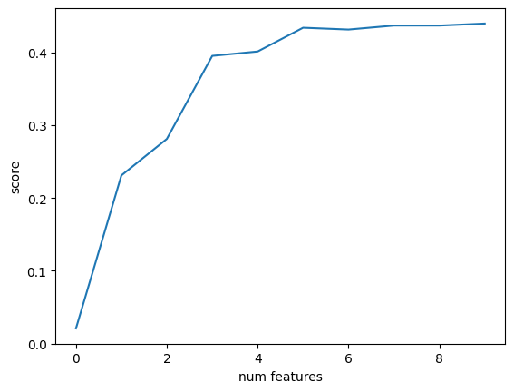

Réduction de dimensions#
import numpy as np
import pandas as pd
import matplotlib.pyplot as plt
from sklearn.datasets import load_diabetes
from sklearn.linear_model import LinearRegression
from sklearn.model_selection import train_test_split
from sklearn.inspection import permutation_importance
diabetes = load_diabetes()
diabetes.data.shape
(442, 10)
Jeux d’apprentissage et de test#
X_train, X_test, y_train, y_test = train_test_split(
diabetes.data, diabetes.target, test_size=0.2, random_state=2
)
Utilisation de l’ensemble des features#
lin_reg = LinearRegression()
lin_reg.fit(X_train, y_train)
score_before_reduction = lin_reg.score(X_test, y_test)
score_before_reduction
0.4399338661568968
Estimation de l’importance des features pour la prédiction#
importances = permutation_importance(
lin_reg, X_train, y_train, random_state=1
)
list(zip(
diabetes.feature_names, importances.importances_mean
))
[('age', 0.000386594757129477),
('sex', 0.03210189670254946),
('bmi', 0.18015040949917321),
('bp', 0.08728237425792293),
('s1', 0.6038752183126779),
('s2', 0.22205419770356513),
('s3', 0.021859932251580293),
('s4', 0.008307144937633048),
('s5', 0.5667868975814724),
('s6', -0.00011076659748388007)]
On ordonne les features selon leur importance pour la prédiction
ordered_features = importances.importances_mean.argsort()[::-1]
ordered_importances = importances.importances_mean[ordered_features]
feature_names = np.array(diabetes.feature_names)
ordered_feature_names = feature_names[ordered_features]
assert ordered_feature_names[0] == "s1"
list(zip(
ordered_feature_names, ordered_importances
))
[('s1', 0.6038752183126779),
('s5', 0.5667868975814724),
('s2', 0.22205419770356513),
('bmi', 0.18015040949917321),
('bp', 0.08728237425792293),
('sex', 0.03210189670254946),
('s3', 0.021859932251580293),
('s4', 0.008307144937633048),
('age', 0.000386594757129477),
('s6', -0.00011076659748388007)]
Effet de la réduction de dimension en fonction du nombre de features utilisées#
def score_after_reduction(X_train, X_test, y_train, y_test, features, n_features):
X_train_reduced = X_train[:, features[0: n_features]]
X_test_reduced = X_test[:, features[0: n_features]]
lin_reg = LinearRegression()
lin_reg.fit(X_train_reduced, y_train)
return lin_reg.score(X_test_reduced, y_test)
scores = [score_after_reduction(X_train, X_test, y_train, y_test, ordered_features, n_features)
for n_features in range(1, len(ordered_features) + 1)]
plt.plot(range(0, len(ordered_features)), scores)
plt.xlabel("num features")
plt.ylabel("score")
plt.show()
